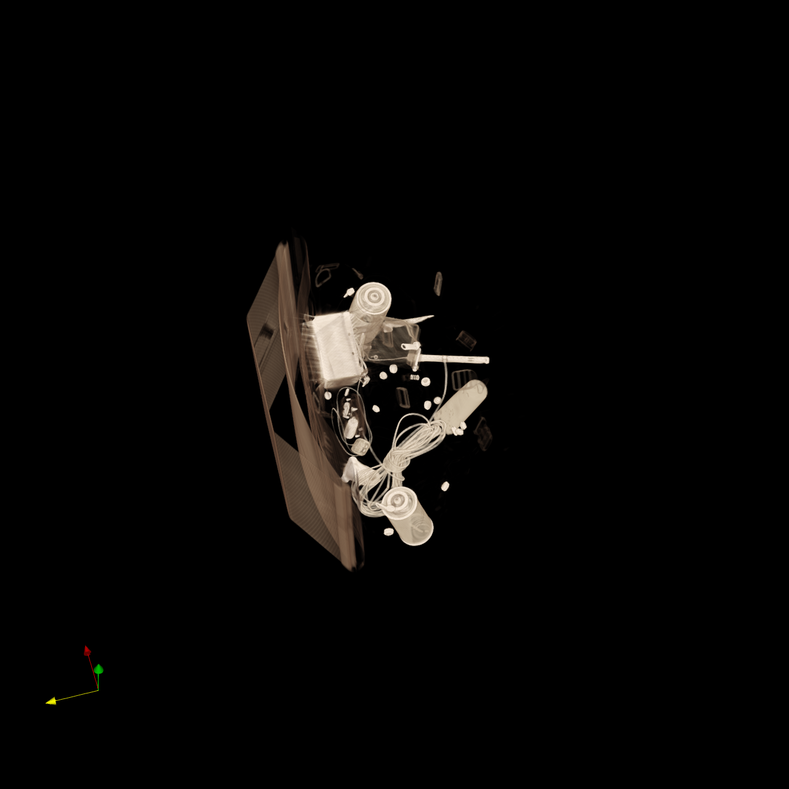

🎯 SciVisAgentBench Evaluation Report
📊 Overall Performance
Overall Score
44.1%
397/900 Points
Test Cases
26/27
Completed Successfully
Avg Vision Score
56.0%
Visualization Quality
PSNR (Scaled)
N/A
Peak SNR (0/26 valid)
SSIM (Scaled)
N/A
Structural Similarity
LPIPS (Scaled)
N/A
Perceptual Distance
Completion Rate
96.3%
Tasks Completed
ℹ️ About Scaled Metrics
Scaled metrics account for completion rate to enable fair comparison across different evaluation modes. Formula: PSNRscaled = (completed_cases / total_cases) × avg(PSNR), SSIMscaled = (completed_cases / total_cases) × avg(SSIM), LPIPSscaled = 1.0 - (completed_cases / total_cases) × (1.0 - avg(LPIPS)). Cases with infinite PSNR (perfect match) are excluded from the PSNR calculation.
🔧 Configuration
📝 dataset_001
⚠️ LOW SCORE16/35 (45.7%)
📋 Task Description
Clear the ParaView pipeline and load the data file "dataset_001/data/data_001_256x256x256_uint8.raw".
Use visualization tools to determine what object or structure is contained in this dataset. Save the 1280*1280 visualization image as "dataset_001/results/{agent_mode}/dataset_001.png"
Provide a textual report identifying what you observe and save it to "dataset_001/results/{agent_mode}/answers.txt"
🖼️ Visualization Comparison
Ground Truth

Agent Result

📏 Vision Evaluation Rubrics
📝 Text-Based Q&A Evaluation
📊 Detailed Metrics
Visualization Quality
8/10
Output Generation
5/5
Efficiency
3/10
Completed in 137.87 seconds (good)
Text Q&A Score
0/10
0.0%
Input Tokens
553,396
Output Tokens
4,352
Total Tokens
557,748
Total Cost
$1.7255
📝 dataset_002
⚠️ LOW SCORE14/35 (40.0%)
📋 Task Description
Clear the ParaView pipeline and load the data file "dataset_002/data/data_002_512x512x373_uint16.raw".
Use visualization tools to determine what object is contained in this dataset. Save the 1280*1280 visualization image as "dataset_002/results/{agent_mode}/dataset_002.png"
Provide a textual report identifying what you observe and save it to "dataset_002/results/{agent_mode}/answers.txt"
🖼️ Visualization Comparison
Ground Truth

Agent Result
Image not available📏 Vision Evaluation Rubrics
📝 Text-Based Q&A Evaluation
📊 Detailed Metrics
Visualization Quality
5/10
Output Generation
5/5
Efficiency
4/10
Completed in 103.34 seconds (good)
Text Q&A Score
0/10
0.0%
Input Tokens
445,137
Output Tokens
4,023
Total Tokens
449,160
Total Cost
$1.3958